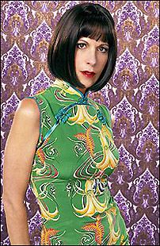
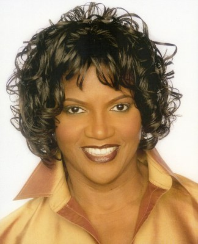
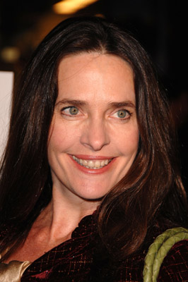
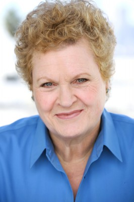

#10078 Tage wie dieser
Auszeichnungen: für 1 Oscars nominiert

 IMDB-Wertung: 6.5 / 10
IMDB-Wertung: 6.5 / 10  Metascore: 0
Metascore: 0 
Journalist Jack hat seine Tochter zu Besuch und bringt sie nicht rechtzeitig zur Schule, so dass sie ihren Schulausflug verpasst. Ebenso ergeht es der allein erziehenden Architektin Melanie und ihrem Sohn. Beide haben wichtige berufliche Termine und so beschließen sie in der Not, abwechselnd auf die Kinder aufzupassen. Doch dabei läuft einiges schief.
Jahr: 1996
Dauer: 108 Minuten
FSK: 6
Land: USA Studio: Twentieth Century FoxTonspuren:
Untertitel:
Auflösung: 1080p (1920x1040) Größe: 7823 MB
Genre: Drama, Komödie, Liebe
Regisseur: Michael Hoffman
Drehbuch: Terrel Seltzer, Ellen Simon
Soundtrack: James Newton Howard
Darsteller:
 Michelle Pfeiffer als Melanie Parker
Michelle Pfeiffer als Melanie Parker George Clooney als Jack Taylor
George Clooney als Jack Taylor Mae Whitman als Maggie Taylor
Mae Whitman als Maggie Taylor- Alex D. Linz als Sammy Parker
 Charles Durning als Lew
Charles Durning als Lew- Jon Robin Baitz als Yates, Jr.
-  Ellen Greene als Elaine Lieberman
- Joe Grifasi als Manny Feldstein
-  Anna Maria Horsford als Evelyn
 Gregory Jbara als Metro Reporter
Gregory Jbara als Metro Reporter-  Sheila Kelley als Kristen
 Robert Klein als Dr. Martin
Robert Klein als Dr. Martin George Martin als Smith Leland
George Martin als Smith Leland- Michael Massee als Eddie
 Amanda Peet als Celia
Amanda Peet als Celia Holland Taylor als Rita
Holland Taylor als Rita- Rachel York als Liza
-  Marianne Muellerleile als Ruta
- Maggie Wagner als Daily News Reporter
- Larry Sherman als Daily News Visitor
- Shaun Duke als Foreign Artist Guy
 Michael Badalucco als Lt. Bonomo
Michael Badalucco als Lt. Bonomo- Joe Avellar als Reporter
- Bitty Schram als Marla
 Suzan Anbeh als (uncredited)
Suzan Anbeh als (uncredited) Carl Burrows als Mail Carrier (uncredited)
Carl Burrows als Mail Carrier (uncredited) Hélène Cardona als The French Shopper (uncredited)
Hélène Cardona als The French Shopper (uncredited)- Deborah Cresswell als Oyster Bar Customer (uncredited)
- Gideon Jacobs als Billy (uncredited)
- Adrian Lee als Mom (uncredited)
- Timothy Scott Ralston als Architect (uncredited)
- Pete Hamill als Frank Burroughs
- Barry Kivel als Yates, Sr.
- Steven Jang als Vincent Wang
- Samantha Cintrón als Rosa
- Victor Truro als Doctor
- Ashley Greenfield als Jessica
- Sidney Armus als Mayor Aikens
- Hal Panchansky als Metro Reporter #2
- Isabelle Ashland als Daily News Reporter
- Jasmin Hartmann als Daily News Reporter
- Thomas Schall als Gentleman
- Jeanie Van Dam als Old Woman
- Kirstin Allen als Pregnant Saleslady
- Michael Genet als Press Secretary
- Julia Ryder Perce als Lew's Secretary
- P.J. Aliseo als Spiderman
- Liam Ahern als The Incredible Hulk
- José Rabelo als Museum Guard
- Darla Hill als Oribe's Receptionist
Datei: X:\1996\Tage wie dieser (1996, FSK6, 1920x1040).mkv seit 27.11.2018
Festplatte: Gemischt-01+Anime
 Es gibt insgesamt 78 Filme in der Gruppe '1996'
Es gibt insgesamt 78 Filme in der Gruppe '1996'